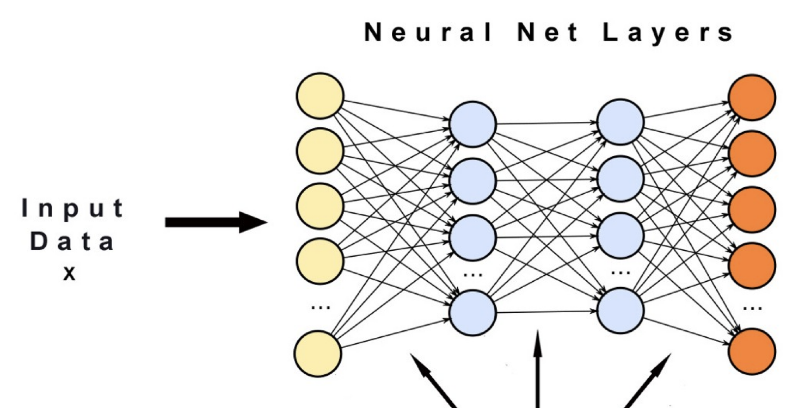
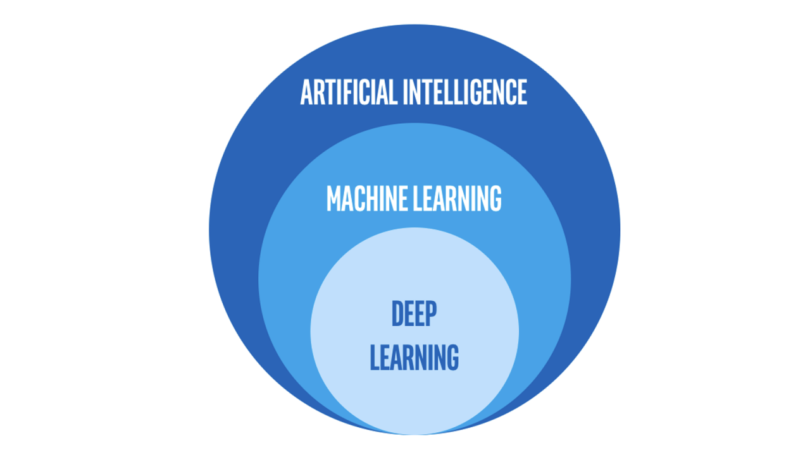

Lesson 9 - Artificial Intelligence Vs Machine Learning Vs Deep Learning
At the end of this lesson, you will be able to:
- Differentiate between Machine Learning (ML) and Deep Learning (DL) at a high level.
- Identify DL applications and challenges.
What is Deep Learning?
- Deep learning is a type of machine learning in which a model learns to perform classification tasks directly from images, text, or sound.
- Deep learning is usually implemented using a neural network architecture.
- The term “deep” refers to the number of layers in the network—the more layers, the deeper the network.
- Traditional neural networks contain only 2 or 3 layers, while deep networks can have hundreds.
What is Neural Network?
- Neural networks are loosely modeled after how neurons in the brain behave.
- They can automatically extract features without input from the programmer.
- Every neural network node is essentially a machine learning algorithm.
- It is useful when solving problems for which the dataset is very large.

Artificial Intelligence Vs Machine Learning Vs Deep Learning
AI - Any technique that enables computers to mimic human intelligence.
Machine Learning - A subset of AI that enables machines to improve at tasks with experience.
Deep Learning - A subset of ML that enables software to train itself to perform tasks with vast amounts of data

Deep Learning Applications
- Deep learning is especially well-suited to identification applications, such as face recognition, text translation, voice recognition, and advanced driver assistance systems, including, lane classification and traffic sign recognition.
- A self-driving vehicle slows down as it approaches a pedestrian crosswalk.
- An ATM rejects a counterfeit bank note.
- A smartphone app gives an instant translation of a foreign street sign.
Deep learning represents a conceptual shift in thinking,
from
"How do you engineer the best features?"
to
"How do you guide the model toward discovering the best features?”